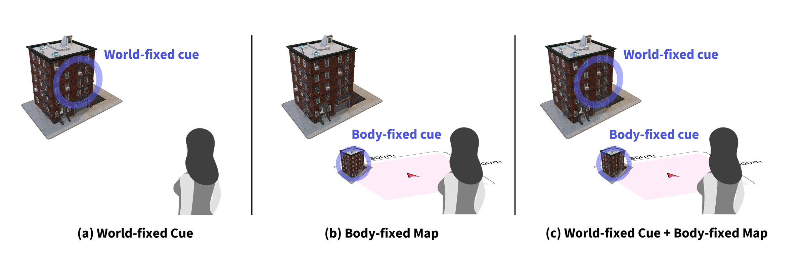
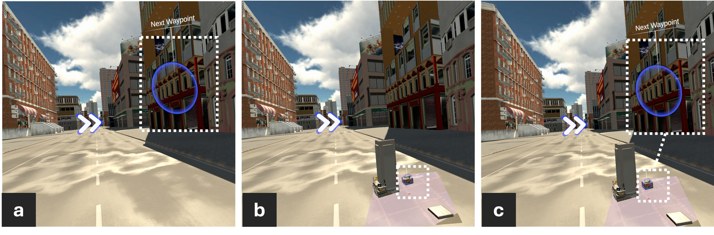
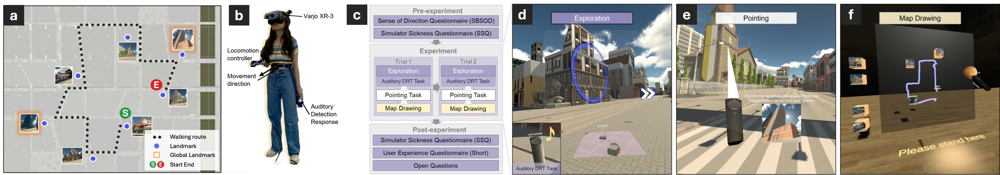

As spatial computing offers expanded design spaces and brings digital information seamlessly into a physical environment, it redefines how we perceive space and navigate our surroundings. This study investigates enhancing human navigation and spatial knowledge acquisition in large space environments, focusing on the integration of spatial visual cue display in 3D design space. Three cues were designed (world-fixed cue, body-fixed world-in-miniature map, and a combination of both) and their impact on spatial learning, eye movements, cognitive load, and user experience was assessed. The findings reveal that displaying cues across frames of reference (combining the world- and body-fixed cues) significantly enhances spatial information processing and learning without the cost of cognitive load. The study also sheds light on how individuals’ eye movement patterns differ with interface design and while learning, which advances our understanding of the relationship between gaze behavior and spatial learning outcomes and informs cognition-aware adaptive 3D interface design. The anonymized data generated in this study are openly available on the Open Science Framework.
Participants navigated a predefined route in a virtual urban environment with one of three cue designs. World anchors highlights to landmarks in the environment. Map presents a body-fixed, forward-up world-in-miniature map with 3D landmark replicas. WorldMap combines both, linking map replicas to their real counterparts through synchronized circular highlights.

90 participants navigated a 1 km route twice in an immersive virtual city wearing a Varjo XR-3 headset with 200 Hz eye tracking. Spatial learning was measured with an egocentric pointing task and an allocentric map drawing task. Cognitive load was measured continuously with an auditory detection response task.

After each exploration, participants were teleported into the environment and pointed toward remembered landmarks with a controller ray, yielding 42 pointing directions per participant. Pointing error, the angular difference between the estimated and ground-truth directions, quantified egocentric spatial memory of landmark relationships.
Participants then reconstructed the layout on a blank board. Given a start position marker and images of the seven landmarks, they placed each replica where they believed it was located and sketched the route they had traversed. Bidimensional regression between estimated and actual configurations quantified survey knowledge.
Performance followed the predicted order across both tasks (World < Map < WorldMap). Relative to the World condition, pointing error was 21.8% lower and map drawing accuracy 22.9% higher in the WorldMap condition.
Detection response task performance showed no significant differences across conditions, and pupil diameter behaved similarly. The body-fixed map functioned as supportive spatial context instead of competing visual input.
Map conditions increased vertical gaze dispersion and saccadic amplitude while reducing horizontal scanning. Participants in the World condition relied on global landmarks, and attention to them predicted learning. Map users shifted to the survey view, which supplanted that role.
Across trials, participants improved on both spatial tasks, explored more broadly with larger gaze hit distances, showed shorter fixation durations with higher fixation frequency, and exhibited reduced pupil diameter ratio, indicating more efficient processing.
Integrate perspectives across frames of reference. Dual cueing that links map elements to corresponding world-fixed landmarks establishes explicit spatial correspondences and supports spatial learning without increasing cognitive load.
Trigger world-fixed highlights at intermediate distances. Around 50 m, landmarks are perceptible yet visually subtle, which facilitates timely spatial association while minimizing visual competition.
Place body-fixed maps below the natural horizon. A comfortable viewing distance, about 1.5 m from the user, supports quick visual access without obstructing the primary field of view.
Limit simultaneous landmark replicas. Showing at most five replicas on the map reduces visual clutter and prevents information overload.
Adapt cueing to learning and familiarity. Gaze behavior shifts as users learn a space. Cue density or map detail could be simplified once users demonstrate spatial understanding, preserving attentional resources for other tasks.
@article{zhao2026effects,
author = {Zhao, Yu and Stefanucci, Jeanine and Creem-Regehr, Sarah and Bodenheimer, Bobby},
title = {Effects of Spatial Perspective and Frame of Reference Integration on Gaze Behavior and Spatial Learning},
journal = {IEEE Transactions on Visualization and Computer Graphics},
year = {2026},
doi = {},
note = {Presented at IEEE ISMAR 2026}
}